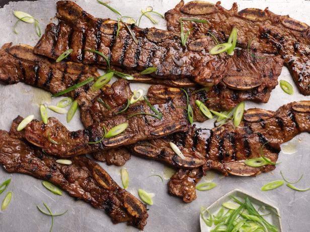

Kalbi (Korean Barbequed Beef Short Ribs)

Short Ribs Worthy of Winter Grilling
This dish, known as galbi, is a fine thing to eat in a restaurant, but it also makes for a wonderful and easy meal at home. If you buy English-style short ribs, which are cut along the bone, you must butterfly the meat into a thin, long strip. If the ribs you buy are flanken-style, in which a band saw is used to cut across the ribs, creating half-inch slices of beef dotted with three little bones, rinse them under cold water before seasoning to remove any bone fragments. It’s a good idea to let the ribs marinate for at least two hours to allow the seasoning to penetrate; marinating overnight is even better.
Ingredients
- 3 Pounds short ribs, cut in ½-inch slices across the bones (flanken-style)
- 1/3 Cup Soy Sauce
- 1/3 Cup Rice Wine
- 1/3 Cup Brown Sugar
- 1 Tablespoon Sesame Oil
- 2 Tablespoon Black pepper
- 1/4 Teaspoon Cayenne or Gochujang
- 1 Medium Onion, Peeled or Quartered
- 8 Garlic Cloves
- 1 small Asian pear, peeled, cored and quartered (or use an ordinary pear or tart apple)
- 1 1-inch Chunk of Ginger, Peeled
- 2 Teaspoons Sesame Seeds
- Lettuce Leaves
- Sliced Red Or Green Hot Pepper (optional)
- Ssamjang (spicy Korean soybean paste), for dipping (optional)
- Steamed Rice (optional)
Steps
- Rinse short ribs in cold water, pat dry and place in a wide shallow bowl. In another bowl, mix together soy sauce, brown sugar, rice wine, sesame oil, black pepper and cayenne.
- Put onion, garlic, pear and ginger in the work bowl of a food processor. Grind ingredients to a smooth purée, then add to soy sauce mixture. Add sesame seeds. Thin with ¼ cup water. Pour marinade over short ribs and mix well. Cover and refrigerate for at least 2 hours, or overnight. Bring to room temperature, drain and discard marinade.
- Cook short ribs on a hot grill or under the broiler for 2 to 3 minutes per side, until nicely browned but juicy. Pile grilled meat on a platter and serve immediately with lettuce leaves on the side. Accompany with sliced hot peppers, ssamjang and steamed rice, if desired.